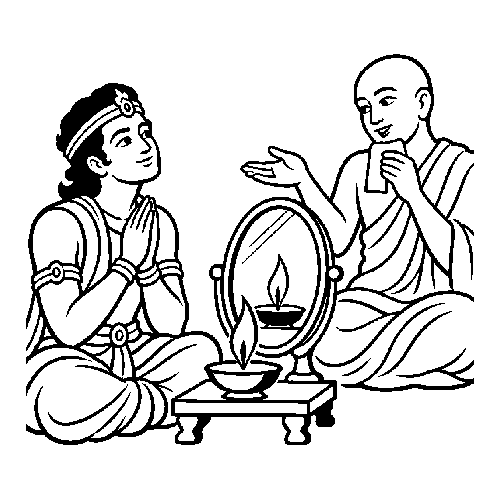

એક સ્વચ્છ કાચના દર્પણની સામે પ્રચંડ અગ્નિ બળતી હોય, ત્યારે દર્પણમાં અગ્નિની લાલ ધખધખતી જ્વાળાઓ પ્રત્યક્ષ દેખાય છે. છતાં પણ દર્પણ પોતે ક્યારેય ગરમ થતું નથી કે બળીને રાખ થતું નથી. અગ્નિ દર્પણમાં નથી અને દર્પણ અગ્નિનું કર્તા નથી; દર્પણ કેવળ જ્યોતિનું પ્રતિષેધક રહીને પોતાની શીતળતા જાળવી રાખે છે. તેવી જ રીતે સંસારી આત્માની સાથે અનાદિ કાળથી જ્ઞાનાવરણીયાદિ અષ્ટકર્મ અને ઔદારિકાદિ શરીર જોડાયેલાં હોવા છતાં, આત્મા વાસ્તવમાં જડ પુદ્ગલકર્મોનો, શરીરના હાડ-માંસનો કે બાહ્ય ભાવોનો અકર્તા અને અભોક્તા છે તેવો નિષેધાત્મક શુદ્ધ બોધ કરાવવો તે 'પ્રતિષેધક શુદ્ધનય' કહેવાય છે.
આ નય આધ્યાત્મિક મુક્તિનો શંખનાદ છે. અજ્ઞાની જીવ માને છે કે 'મેં શરીર બનાવ્યું, મેં રોટલી બનાવી, હું કર્મ બાંધું છું અને હું ભોગવું છું.' આ પ્રતિષેધક શુદ્ધનય અજ્ઞાનની આ ભ્રાંતિ પર કુહાડો ચલાવે છે. તે સ્પષ્ટ કરે છે કે ચેતન ક્યારેય જડનું કાર્ય કરી શકે નહીં અને જડ ક્યારેય ચેતનનું કાર્ય કરી શકે નહીં. જીવ પુદ્ગલકર્મનો અકર્તા છે.
જ્યારે જીવને ખબર પડે છે કે હું શરીર કે રોગનો કર્તા નથી, ત્યારે રોગ, વૃદ્ધાવસ્થા અને મૃત્યુનો ભય ક્ષણવારમાં ગળી જાય છે.
જડ-ચેતનની ભિન્નતા, દર્શાવે આ નય;
પ્રતિષેધક શુદ્ધ નયે, ટળે ભવોભવ ભય.
પુદ્ગલ કર્મે અલિપ્ત છે, આતમ જ્યોતિ-રૂપ;
અકર્તા અજન્મા સદા, ચૈતન્યમય અનુપ.

ક્ષત્રિયકુમાર ધર્મવર્ધન એક ભયંકર અસાધ્ય વ્યાધિથી પીડાતા હતા. શરીર પર થતા અસહ્ય દર્દ અને ફોલ્લાઓને કારણે તેઓ રાત-દિવસ કણસતા હતા. તેમના મનમાં સતત આ જ વિચાર ઘોળાતો રહેતો હતો: "અરેરે! મારું શરીર આટલું ગંદું થઈ ગયું! આ અસહ્ય દર્દ હું ભોગવી રહ્યો છું. આ રોગ મારો વિનાશ કરી રહ્યો છે. હું જ આ રોગનો ભોગ બન્યો છું!" શરીરના દર્દ કરતાં પણ મનની આ પીડા તેમને વધારે કોરી ખાતી હતી. તેઓ માનતા હતા કે આ રોગ તેમના આત્માને જ બાળી રહ્યો છે. આ આંતરિક સંતાપમાં તેમનું હૃદય આક્રંદ કરી ઊઠ્યું: "શું આ દર્દમાંથી ક્યારેય મુક્તિ મળશે? શું મારો આત્મા આ વ્યાધિથી કાયમ માટે બળી ગયો?"
તે જ સમયે નગરમાં એક મહાતપસ્વી શ્રમણ પધાર્યા. કુમાર ધર્મવર્ધને માંડ માંડ મુનિરાજ પાસે જઈને પોતાની વ્યથા ઠાલવી. મુનિશ્રીએ સામે પડેલા એક સ્વચ્છ દર્પણ તરફ ઈશારો કર્યો, જેમાં દીપકની સળગતી જ્યોત સ્પષ્ટ દેખાતી હતી. મુનિશ્રીએ કહ્યું, "કુમાર, દર્પણને સ્પર્શ કરો. શું દર્પણ ગરમ છે?" કુમારે દર્પણને અડીને કહ્યું, "ના મહારાજ! દર્પણ તો બરફ જેવું શીતળ છે." મુનિરાજે ગંભીર વાણીમાં કહ્યું, "કુમાર, પ્રતિષેધક શુદ્ધનયનો બોધ પામો! તમારો આત્મા આ દર્પણ જેવો છે અને આ વ્યાધિ તે દીપકની જ્વાળા જેવી પુદ્ગલનો પર્યાય છે! જડ શરીરનો રોગ પુદ્ગલમાં છે; તમારો ચેતન આત્મા પુદ્ગલકર્મનો કે રોગનો કર્તા પણ નથી અને વાસ્તવમાં તેનો અભોક્તા પણ નથી! આત્મા તો સદા અખંડ, શીતળ અને જ્ઞાનસ્વરૂપ છે." મુનિશ્રીના આ પરમ સત્યનું પાન કરતાં જ કુમાર ધર્મવર્ધનની દ્રષ્ટિ બદલાઈ ગઈ. શરીરનું દર્દ ગૌણ બની ગયું અને તેઓ પોતાના અજર-અમર આત્મસ્વરૂપમાં સ્થિર થઈ પરમ શાંતિ પામ્યા.
જો આ નયને એકાંત સત્ય માનીને સાધક શુભ કાર્યો કે પાપકર્મોથી પણ મુક્ત માની સ્વચ્છંદ આચરણ કરવા લાગે, તો તે ઘોર અધઃપતનમાં સરી પડે છે. આવી એકાંત જડતાથી જીવ વર્તમાન વ્યવહારિક સાધના અને કર્તવ્યોની ઉપેક્ષા કરી બેસે છે અને ક્રમિક પરિણામોને સુધાર્યા વિના અકાળે પૂર્ણતાના મિથ્યા સંતોષમાં રાચે છે.
આ નય જ્યારે વ્યવહારનય સાથે જોડાય છે, ત્યારે સાધક પુદ્ગલથી અલિપ્ત રહીને શુભ પુરુષાર્થ દ્વારા પાપોનો ત્યાગ કરી શુદ્ધ આત્મસ્વભાવમાં લીન બને છે.